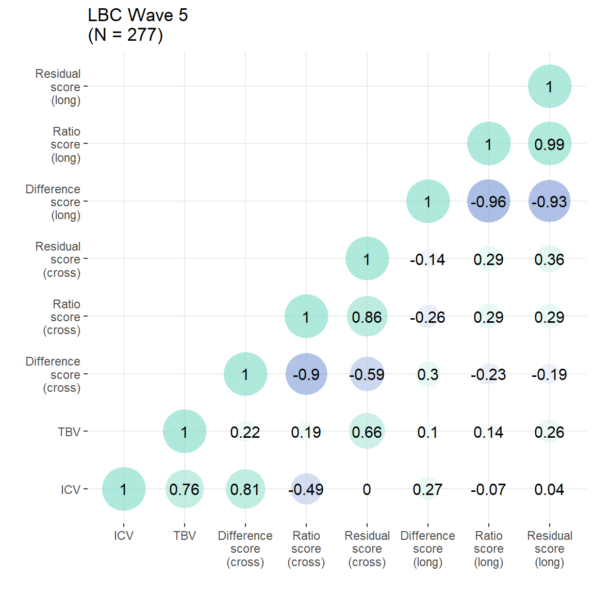
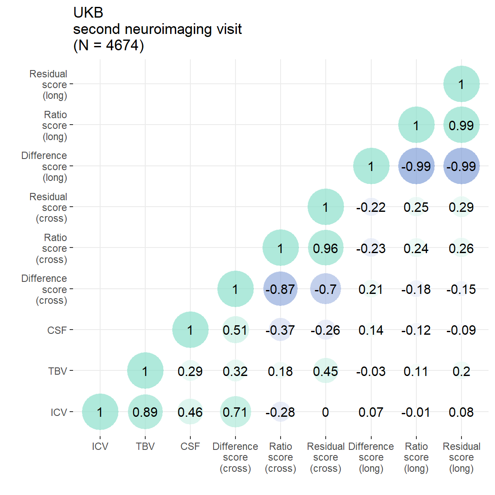
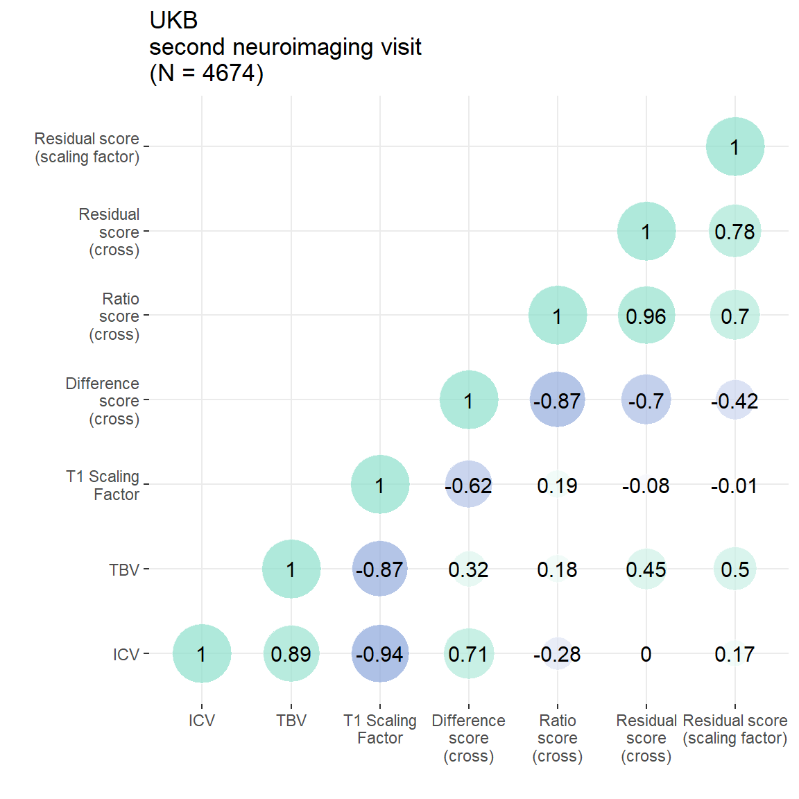

Code
library(ggplot2)
library(data.table)
library(ggpubr)
library(patchwork)Results produced by the code below are described in the manuscript under section:
LBA moderately captured observed atrophic changes that were longitudinally observed between two MRI scans nine years apart.
The outcome traits were derived using code displayed in ‘Data preparation’: LBC: neuroimaging & phenotypic data; UKB: neuroimaging & phenotypic data. Ratio and residual scores were not flipped in these analyses, like they were in the analyses presented in the main manuscript. This does not affect the directions of effects when we were comparing e.g., LBA residual score with longitudinal residual score.
plot_heatmap = function(dat = both[,c("ICV","TBV", "diff", "ratio", "resid")], axisNames = c("ICV","TBV","Difference\nscore","Ratio\nscore","Residual\nscore")){
# define function to obtain lower triangle
get_lower_tri<-function(cormat){
cormat[upper.tri(cormat)] <- NA
return(cormat)
}
# get correlation matrix for both samples together
cor = cor(dat, use = "pairwise.complete.obs")
cor = get_lower_tri(cor)
# melt matrix
melted = reshape2::melt(cor)
# get rounded value
melted$value_round = round(melted$value, digit = 2)
melted$distance0 = abs(melted$value)
# plot
library(ggplot2)
p = ggplot(data = melted)+
geom_point(aes(x = Var1, y = Var2, shape = value, fill = value, size = distance0), shape = 21, alpha = 0.7, colour = "white") +
scale_fill_gradient2(low = "#82A0D8", high = "#8DDFCB", mid = "white",
midpoint = 0, limit = c(-1,1), space = "Lab" ,name="Correlation", guide = "legend")+
scale_size_continuous(range = c(1, 15), guide = "none")+
geom_text(aes(Var1, Var2, label = value_round), color = "black", size = 4)+
xlab("")+
ylab("")+
#ggtitle("Pearson's corelations")+
scale_x_discrete(labels = axisNames)+
scale_y_discrete(labels = axisNames)+
guides(fill = "none")+
theme_bw()+
theme(panel.border = element_blank())
return(p)
}Cross-sectional estimates considered from final neuroimaging visit (4th scan, 5th visit). Figures from this analysis are reported in the main paper, and this plot is in Supplementary Plot 4.
# read in LBC data
## longitudinal
long = fread(paste0(out, "/LBC1936_longTBVWaves2and5.txt"), select = c("lbc36no","TBVdiff_2to5","TBVratio_5to2","TBVresid_2to5"))
## cross-sectional
cross4 = fread(paste0(out, "/LBC1936_crossNeuroWave4.txt"), select = c("lbc36no","ICV","TBV", "diff", "ratio", "resid"))
# merge
LBC = merge(long, cross4, by = "lbc36no")
# number of participants
n = nrow(LBC)
# plot correlations between atrophy measures
p = plot_heatmap(dat = LBC[,c("ICV","TBV", "diff", "ratio", "resid","TBVdiff_2to5","TBVratio_5to2","TBVresid_2to5")],
axisNames = c("ICV","TBV","Difference\nscore\n(cross)","Ratio\nscore\n(cross)","Residual\nscore\n(cross)","Difference\nscore\n(long)","Ratio\nscore\n(long)","Residual\nscore\n(long)"))+
ggtitle(paste0("LBC Wave 5\n(N = ",n,")"))
p
Residual score:
Ratio score:
Difference score:
Cross-sectional estimates considered from second neuroimaging visit. Figures from this analysis are reported in the main paper, and this plot is in Supplementary Plot 5.
# read in UKB neuro data
UKB = fread(paste0(out,"/UKB_neuroNoLongProcess.txt"))
# restrict to second neuroimaging visit (i.e., third visit altogether)
UKB3 = UKB[UKB$wave == 3,]
# later edit: exclude extreme outliers from longitudinal data
UKB3 <- UKB3[which(UKB3$TBVdiff_2to3_stand < 10),]
UKB3 <- UKB3[which(UKB3$TBVdiff_2to3_stand > (-10)),]
UKB3 <- UKB3[which(UKB3$TBVratio_3to2_stand < 10),]
UKB3 <- UKB3[which(UKB3$TBVratio_3to2_stand > (-10)),]
UKB3 <- UKB3[which(UKB3$TBVresid_2to3_stand < 10),]
UKB3 <- UKB3[which(UKB3$TBVresid_2to3_stand > (-10)),]
# now that more participants were excluded, need to re-calculate the residual score
model <- lm(TBV ~ ICV, data = UKB3)
UKB3$resid = resid(model)
UKB3$resid_stand <- as.vector(scale(UKB3$resid))
# number of participants
n = nrow(UKB3)
# plot correlations between atrophy measures
p = plot_heatmap(dat = UKB3[,c("ICV", "TBV", "CSF", "diff", "ratio", "resid", "TBVdiff_2to3", "TBVratio_3to2", "TBVresid_2to3")],
axisNames = c("ICV", "TBV", "CSF", "Difference\nscore\n(cross)", "Ratio\nscore\n(cross)", "Residual\nscore\n(cross)", "Difference\nscore\n(long)", "Ratio\nscore\n(long)", "Residual\nscore\n(long)"))+
ggtitle(paste0("UKB\nsecond neuroimaging visit\n(N = ",n,")"))
p
Residual score:
Ratio score:
Difference score:
Figures from this analysis are reported in the main paper, and this plot is in Supplementary Plot 6.
### make same plot only for cross-sectional measures to compare to resid Scaling factor
scaling = plot_heatmap(dat = UKB3[,c("ICV", "TBV", "T1ScalingFactor", "diff", "ratio", "resid", "residScalingFactor_stand")],
axisNames = c("ICV", "TBV", "T1 Scaling\nFactor", "Difference\nscore\n(cross)", "Ratio\nscore\n(cross)", "Residual\nscore\n(cross)", "Residual score\n(scaling factor)"))+
ggtitle(paste0("UKB\nsecond neuroimaging visit\n(N = ",n,")"))
#ggsave(paste0(out, "phenotypic/UKB_scalingFactor.jpg"), plot = scaling, width = 14, height = 14, units = "cm", dpi = 200)
scaling